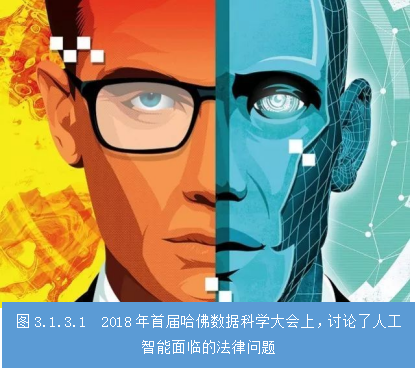
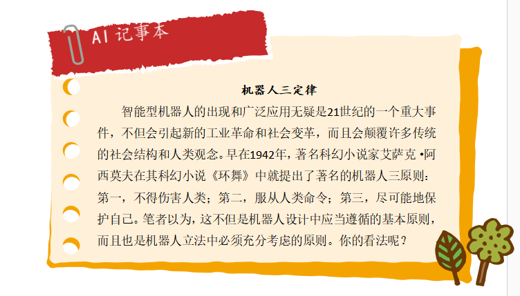

任务3.1.3 人工智能法律探究#
【任务描述】#
2016年5月7日，美国佛罗里达州一位名叫Joshua Brown的40岁男子开着一辆以自动驾驶模式行驶的特斯拉Model S在高速公路上行驶，全速撞到一辆正在垂直横穿高速的白色拖挂卡车，最终造成车毁人亡。虽然车上有安全驾驶员，但当时汽车完全由自动驾驶系统(即人工智能）控制。和其他涉及人与AI技术交互的事故一样，这起事故提出了一系列的道德和原始法律问题。阅读材料，小组讨论后回答以下问题：
（1）开发该系统的程序员在防止该系统夺人性命方面负有怎样的道德责任？
（2）谁应该为赫茨伯格的死负责？是坐在驾驶位上的那个人吗？是测试那辆汽车的公司吗？是该AI系统的设计者吗？还是车载感应设备的制造商？
【学习目标】#
#### 1.知识目标
(1)了解人工智能的发展中的主要法律问题；
(2)熟悉人工智能法律问题的具体表现方式；
(3)理解现代人工智能法律制定的指导思想。
2.能力目标#
(1)能阐述人工智能技术发展对现有的法律体系带来的冲击和挑战；
(2)能积极应对人工智能技术发展带来的法律问题。
3.素质素养目标#
（1）培养学生的社会责任感和历史使命感。
（2）培养学生“主要矛盾和次要矛盾”的辩证思维方法；
（3）培养“以人为本”、“公正性”的价值导向。
（4）培养学生服务人民、奉献社会的人生追求。
任务分析#
#### 1.重点
（1）人工智能法律问题的表现形式；
（2）从各类人工智能法律问题总结人工智能技术发展给现有的法律体系带来的冲击和挑战。
#### 1.难点
应对人工智能技术发展带来的法律问题的措施
##知识链接 我们已经进入人工智能时代，智能型机器人、自动驾驶、AI创作、语音识别……人工智能时代的到来，不仅便利了当今人们的生活，同时也对当今的社会生活方式和价值观念带来了相应一定程度上的冲击。人工智能时代下的法律问题，不仅指人工智能在制造、使用及销毁过程中所涉及到的相关法律问题，而且还包括人工智能自身所带来的新型法律问题。
### 一、人工智能法律问题 科技是一把双刃剑，人工智能技术亦是如此。当前，随着人工智能的应用越来越广泛，一系列法律问题随之而来。 #### 1.人格权保护问题 现在很多人工智能系统把一些人的声音、表情、肢体动作等植入内部系统，使所开发的人工智能产品可以模仿他人的声音、形体动作等，甚至能够像人一样表达，并与人进行交流。但如果未经他人同意而擅自进行上述模仿活动，就有可能构成对他人人格权的侵害。此外，人工智能还可能借助光学技术、声音控制、人脸识别技术等，对他人的人格权客体加以利用，这也对个人声音、肖像等的保护提出了新的挑战。

#### 2.知识产权的保护问题 从实践来看，机器人已经能够自己创作音乐、绘画，机器人写作的诗歌集也已经出版，这对现行知识产权法提出了新的挑战。例如，百度已经研发出可以创作诗歌的机器人，微软公司的人工智能产品“微软小冰”已于2017年5月出版人工智能诗集《阳光失了玻璃窗》。这就提出了一个问题，即这些机器人创作作品的著作权究竟归属于谁？是归属于机器人软件的发明者？还是机器人的所有权人？还是赋予机器人一定程度的法律主体地位，从而由其自身享有相关权利？人工智能的发展也可能引发知识产权的争议。智能机器人要通过一定的程序进行“深度学习”“深度思维”，在这个过程中有可能收集、储存大量的他人已享有著作权的信息，这就有可能构成非法复制他人的作品，从而构成对他人著作权的侵害。
#### 3.数据财产的保护问题 人工智能的发展也对数据的保护提出了新的挑战，一方面，人工智能及其系统能够正常运作，在很大程度上是以海量的数据为支撑的，在利用人工智能时如何规范数据的收集、储存、利用行为，避免数据的泄露和滥用，并确保国家数据的安全，是亟需解决的重大现实问题。另一方面，人工智能的应用在很大程度上取决于其背后的一套算法，需要法律制度予以积极应对，有效规范这一算法及其结果的运用，避免侵害他人权利。
#### 4.侵权责任的认定问题 随着人工智能应用范围的日益广泛，其引发的侵权责任认定和承担问题将对现行侵权法律制度提出越来越多的挑战。无论是机器人致人损害，还是人类侵害机器人，都是新的法律责任。机器人是人制造的，其程序也是制造者控制的，在造成损害后，谁研制的机器人，就应当由谁负责，似乎在法律上没有争议。人工智能就是人的手臂的延长，在人工智能造成他人损害时，当然应当适用产品责任的相关规则。其实不然，机器人与人类一样，是用“脑子”来思考的，机器人的脑子就是程序。我们都知道一个产品可以追踪属于哪个厂家，但程序是不一定的，有可能是由众多的人共同开发的，程序的产生可能无法追踪到某个具体的个人或组织。尤其是，智能机器人也会思考，如果有人故意挑逗，惹怒了它，它有可能会主动攻击人类，此时是否都要由研制者负责，就需要进一步研究。
#### 5.机器人的法律主体地位问题 随着人工智能技术的完善，人工智能机器人已经逐步具有一定程度的自我意识和自我表达能力，可以与人类进行一定的情感交流。可以预见，未来若干年，机器人可以达到人类50%的智力。这就提出了一个新的法律问题，即我们将来是否有必要在法律上承认人工智能机器人的法律主体地位？在现实生活和工作中，机器人可以为我们接听电话、语音客服、身份识别、翻译、语音转换、智能交通，甚至案件分析。有统计数据显示，现阶段23%的律师业务已可由人工智能完成。机器人本身能够形成自学能力，对既有的信息进行分析和研究，从而提供司法警示和建议。甚至有人认为，机器人未来可以直接当法官，这对现有的权利主体、程序法治、用工制度、保险制度、绩效考核等一系列法律制度提出了挑战，我们需要妥善积极应对。
### 二、法律积极应对人工智能 人工智能时代已经来临，它不仅改变人类世界，也会深刻改变人类的法律制度。我们的法学理论研究应当密切关注社会现实，积极回应大数据、人工智能等新兴科学技术所带来的一系列法律挑战，从而为我们立法的进一步完善提供有力的理论支撑。面对以人工智能为代表的飞速发展的现代科学技术，人类必须高度关注技术对社会关系和社会观念所带来的巨大冲击，同时充分利用法律的引导、规制和促进功能，实现法律与技术进步的良性互动。在这里我们探讨从法理、法律方面对人工智能的发展和应用予以回应，让人工智能能够在法律的规范下健康发展并造福人类。

#### 1.利用良好的法律制度促进科技发展 我们在充分肯定人工智能对解放人类生产力所带来的重大便利的同时，也必须高度重视人工智能对传统的社会机构、社会关系、人伦关系所带来的颠覆性影响，严格划定人工智能作用(活动)的禁区。法律不仅承担着行为调控、冲突解决、社会控制、公共管理等功能，而且负有促进社会发展，引导社会生活的使命。良好的机器人法律制度应当是既能够充分调动社会主体的创造热情、促进社会经济发展的社会财富创造法，又能够在发明创造和财富创造之间搭建起便捷转换通道的市场经济催化法。一方面，要应用良好的制度设计满足机器人发展的客观要求，积极利用机器人解放人的功能，实现人的全面发展，并积极改善人与自然、人与社会的关系；另一方面，要充分发挥法律对科学研究的价值引领功能。随着人工智能技术的日趋完善和自然人与机器人相处能力的逐步增强，可以通过不断修改法律逐步放宽对机器人行为的限制。
#### 2.确立人类优先和安全优先原则
现代国家确立了“以人为本”的立法理念。这就要求一切立法都应围绕改善人的生存条件和生存环境，增进人类福祉，促进人的全面发展而进行。这既是文明立法的本质要求，也是良法善治的应有之意。首先要求必须具有公正性，其次要求必须是能够满足大多数人的需要，最后必须符合社会公众对法律的预期，符合公序良俗的基本要求。
具体到机器人立法，由于机器人的应用不但会带来深刻的社会变化，而且也会影响到人类自身的发展，影响到对人本身的认知，甚至会危及人的生存。诚如霍金所说：“人工智能的真正风险不是它的恶意，而是它的能力。一个超智能的人工智能在完成目标方面非常出色，如果这些目标与我们的目标不一致，我们就会陷入困境。因此，人工智能的成功有可能是人类文明史上最大的事件，但人工智能也有可能是人类文明史的终结!”因此在相关立法中必须确立人类优先的原则和理念，以尊重人的存在、人的生命健康、人的利益、人的安全为根本旨归。同时，相关立法绝不能仅仅关注机器人的技术性内涵，而更应当关注其文化内涵，相关的制度设计不应是仅具有程序性操作意义的技术性规范，而应是充满人文关怀和伦理精神的技术性与道德性完美融合的法律。一方面，我们要坚决把违背公序良俗和有可能挑战人类伦理底线的人工智能技术产品，排除在法律的保护之外；另一方面，通过政策或法律，对那些有可能影响人类伦理的技术进行严格的管控和必要的限制，对风险不明的技术应用必须留下足够的安全冗余度，防止因技术的失控可能给人类带来的毁灭性打击。
#### 3.谨慎承认机器人的法律主体资格
机器人出现之后，虽然已具备人的很多要素，可能会有思维，但却并没有上升到有生命的状态，不具备生命所要求的能够利用外界物质形成自己的身体和繁殖后代，按照遗传的特点生长、发育并在外部环境发生变化时及时适应环境的能力。因此从理论上说，机器人作为一种工业设计，只具有使用寿命而不具有自然生命，当然也不能享有以生命为载体的生命权。
机器人是按照人类的预先设计而生产出来的，因此就其本质来说具有可预知性、可复制性和可分类性，而可预期的活动是无法用传统的法律行为进行解释和规范的。此外，机器人没有自然人所具有的道德、良心、良知、伦理、宗教、规矩和习惯，只有功能的强弱。因此机器人不可能有道德感，只有基于程序的反复和预先设计而总结出的规律，从而也就没有民事主体所必备的基于内心感知（良知）所做出的善恶评判和行为选择。法律也无法通过对其行为进行否定性评价而实现抑制或矫正其非法行为的效果。
#### 4.充分尊重社会公众的知情权
人工智能技术及其应用不仅是简单的技术创造，也是一个对人类未来影响深远且关涉每一个人切身利益的重大历史变革。面对功能强大的机器人，每一个行业、每一个领域的自然人的就业机会都有可能被剥夺，每一个生命个体的生存空间都有可能被严重挤压。公众对于信息、知识的获取，不但是其融入公共生活的一个条件，也是维护自身合法权益的必然要求。因此，每一个自然人都应当对人工智能技术享有充分的知情权，都有权知道机器人被广泛应用之后对自己意味着什么。
在相关立法中，必须充分保护社会公众的知情权和参与权，重大人工智能技术的应用应广泛征求公众的意见并进行科学的论证，应强调任何人工智能产品的开发和应用都不能以损害自然人利益为代价，不能以损害社会公共利益为代价。同时必须有效平衡各方利益，特别是平衡生产者和普通社会公众之间的利益。既要充分保护研发者的创造积极性，鼓励其发明出更多更高质量的人工智能产品，也应保证社会公众能够更多地分享因科学技术的进步而产生的社会经济利益和其他人类福祉。
#### 5.建立符合国情的人工智能法律制度体系
法律是为社会服务的，任何法律都必须根植于特定的土壤才能发挥其最大效用。制定符合中国需要的人工智能法律，必须充分尊重人工智能技术发展水平，在尚无充足实践经验指导的情况下，我们暂时无法设计出具有世界引领意义和示范作用的完备的人工智能法律体系；发展人工智能技术既是抢占世界新兴技术制高点的需要，也是世界社会经济发展的大势所趋。
我们的法律必须积极回应人工智能技术的发展需要，通过良好的法律制度设计满足人工智能技术的发展要求。同时，人工智能技术发展是全球的重大事情，我国也可以借鉴国外在人工智能领域的立法经验和司法实务经验，尽快完善相关的法律设计。当务之急是尽快制定人工智能基本法、人工智能产业促进法等法律法规，明确我国对人工智能和机器人产业发展的基本态度，同时出台人工智能产品伦理审查办法、人工智能产品设计指南等规章，未雨绸缪，提前用立法防范因机器人应用可能带来的社会问题。
###素质素养养成
（1）通过引导学生了解人工智能法律问题，培养学生认识技术的多面性，辨别事物的真善美、假恶丑，提高辩证思维能力，合理合法地进行技术开发；
（2）通过人工智能技术应用相关法律问题的学习，培养学生的法治思维，提升法治素养，引导学生做一个自觉尊法学法守法用法的技术技能人才。
（3）通过人工智能技术应用领域“机器人三定律”、立法原则和理念的学习，培养学生“以人为本”的人本思想。
### 任务分组 学生任务分配表 学生任务分配表
### 任务实施
####
组号:__________ 姓名：__________学号:__检索号:
引导问题：
（1）人工智能法律问题指的是什么？
（2）人工智能法律问题的具体表现主要有哪些？请列举具体案例。
（3）人工智能技术发展对现有的法律体系带来哪些冲击和挑战？请查阅相关资料，总结成图文并茂或者视频形式。
####
引导问题：
（1）以人工智能为代表的飞速发展的现代科学技术对社会关系和社会观念所带来的巨大冲击，法理、法律方应如何面对人工智能的发展？
（2）当今世界各国在人工智能法律方面做了哪些工作？
####
引导问题：
组长组织小组成员进行讨论，为了规范人工智能技术的发展，人工智能立法你们认为应遵循哪些原则？教师参与指导。
####
引导问题：
每小组推荐一位同学代表本组汇报人工智能法律问题、以及积极应对的具体措施。
####
引导问题：
自查、分析小组在探究人工智能法律问题的过程中存在的不足及改进方法，并填写下表。
表
####评价反馈
组号:__________ 姓名：__________学号:__检索号:
个人评价表单
####
小组内互评表
####
小组间互评表
####
教师评价表